KHAI TRƯỚC THÔNG TIN TỜ KHAI - IDA
Sau khi đã nhập xong thông tin cho tờ khai, bạn ghi lại và chọn mã nghiệp vụ "2. Khai trước thông tin tờ khai (IDA)" để gửi thông tin.
Trong trường hợp tờ khai của bạn có số dòng hàng lớn hơn 50 chương trình sẽ hiện ra thông báo xác nhận tách tờ khai tự động , ví dụ danh sách hàng bạn nhập vào là 120 dòng hàng:
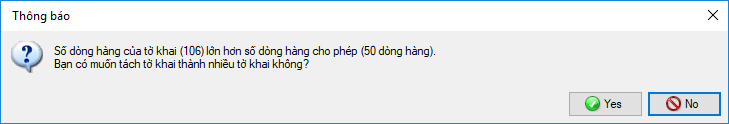
Bạn nhấn chọn "Yes" để chương trình tách tờ khai thành các tờ khai nhánh cho đúng chuẩn của VNACCS (một tờ khai chỉ được tối đa 50 dòng hàng, trường hợp nhiều hơn 50 dòng hàng thì tách thành nhiều tờ khai nhánh khác nhau), khi tách thành công thành bao nhiêu nhánh chương trình sẽ thông báo như sau:
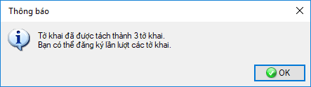
Khi đó bạn vào menu "Tờ khai xuất nhập khẩu" chọn "Danh sách tờ khai nhập khẩu" các tờ khai nhánh có liên quan sẽ được thể hiện như sau:
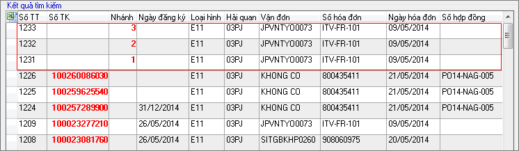
Các tờ khai nhánh này có mối liên hệ với nhau qua số tờ khai đầu tiên, số thứ tự nhánh và các thông tin chung của tờ khai như là số vận đơn, số hóa đơn, các thông tin này giúp người khai hải quan và Cơ quan hải quan xác định được các nhánh khác nhau này là thuộc cùng một lô hàng.
Việc thông quan hàng hóa của các tờ khai nhánh này hoàn toàn độc lập về Luồng tờ khai, số tiền thuế, vì vậy khi tiến hành In tờ khai để lấy hàng, người khai phải in và đóng dấu tất cả các tờ khai nhánh khác nhau này, trên bản in sẽ thể hiện số tờ khai nhánh, số tờ khai đầu tiên số thứ nhánh và tổng số nhánh của lô hàng đang tiến hành thông quan.
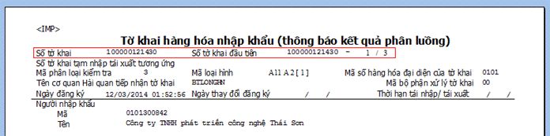
Người khai tiến hành khai lần lượt các tờ khai với chú ý phải khai tờ khai có nhánh đầu tiên trước(số nhánh là 1) .
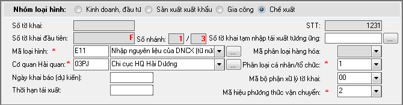
Chương trình sẽ yêu cầu bạn xác nhận chữ ký số khi khai báo, bạn chọn chữ ký số từ danh sách:
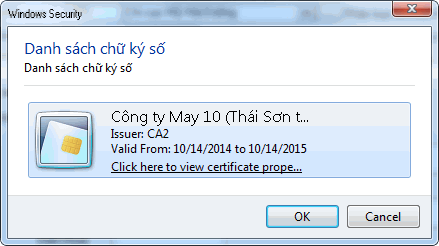
Và nhập vào mã PIN của Chữ ký số:
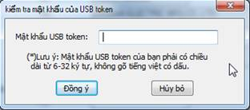
Thành công hệ thống sẽ trả về số tờ khai và bản copy tờ khai bao gồm các thông tin về thuế được hệ thống tự động tính, các thông tin còn thuế khác như "Tên, địa chỉ doanh nghiệp khai báo"
Màn hình bản copy trả về bao gồm các thông tin đã khai báo của tờ khai, phần tổng hợp tính thuế trả về thể hiện ngay góc trái màn hình:
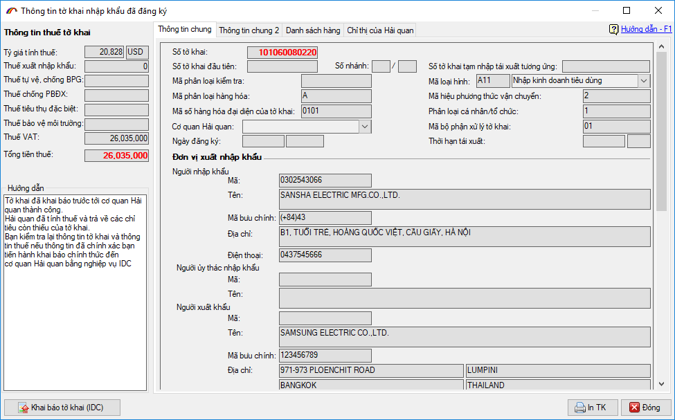
Các thông tin chi tiết thuế suất, mã loại thế suất do hệ thống trả về ở tab "Danh sách hàng" bạn click đúp chuột hoặc nhấn F4 để xem chi tiết.
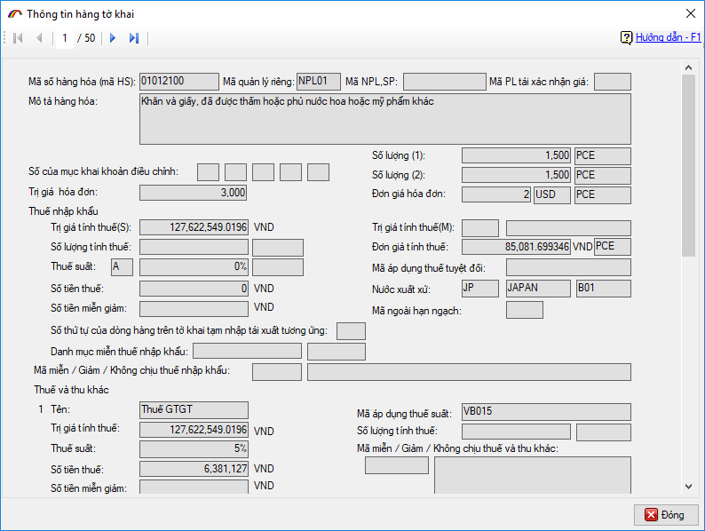
Sau khi kiểm tra các thông tin trả về, người khai có 2 phương án lựa chọn tiếp theo:
Thứ nhất: nếu các thông tin do hệ thống trả về doanh nghiệp thấy có thiếu sót cần bổ sung sửa đổi thì sử dụng mã nghiệp vụ IDB để gọi lại thông tin khai báo của tờ khai và sửa đổi sau đó tiếp IDA lại đến khi thông tin đã chính xác.
Thứ hai: nếu các thông tin do hệ thống trả về đã chính xác, doanh nghiệp chọn mã nghiệp vụ "3.Khai chính thức tờ khai IDC" để đăng ký chính thức tờ khai này với cơ quan hải quan, khi thành công tờ khai này sẽ được đưa vào thực hiện các thủ tục thông quan hàng hóa.
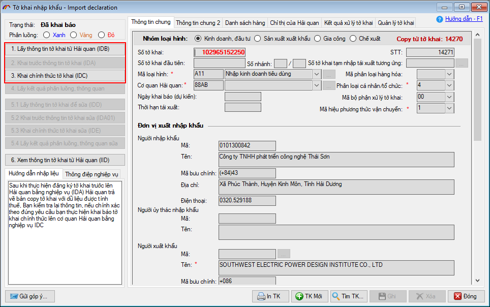
Theo quy định tại Thông tư 39 (điểm a khoản 7 Điều 1 TT39), chỉ cho phép xác nhận hàng qua khu vực giám sát khi tờ khai có chứng từ điện tử khai lên hệ thống Hải quan (áp dụng với tờ khai nhập và tờ khai xuất khẩu).
Do đó, kể từ sau thời điểm thực hiện nghiệp vụ IDA doanh nghiệp có thể thực hiện khai bổ sung chứng từ điện tử đính kèm cho tờ khai bằng cách vào tab "Quản lý tờ khai" nhấn vào nút Thêm mới chứng từ đính kèm... chọn vào mục chứng từ cần bổ sung (Vận đơn, hóa đơn…) hoặc chọn "Chứng từ khác" để bổ sung nhiều loại chứng từ cùng một lần:
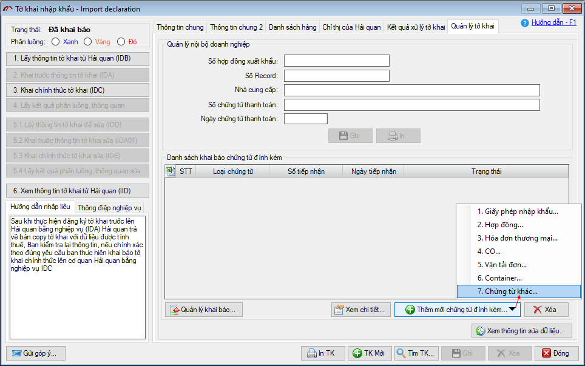
Màn hình chức năng bổ sung chứng từ như sau:
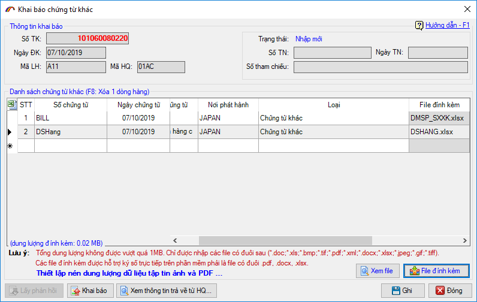
Doanh nghiệp tiến hành nhập thông tin chứng từ: Số chứng từ, ngày chứng từ, tên – nơi chứng từ và chọn loại chứng từ trong danh sách:
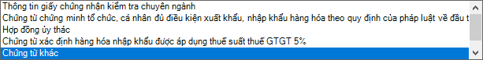
Đối với file đính kèm, bạn nhấn vào nút "File đính kèm" để tìm và chọn:
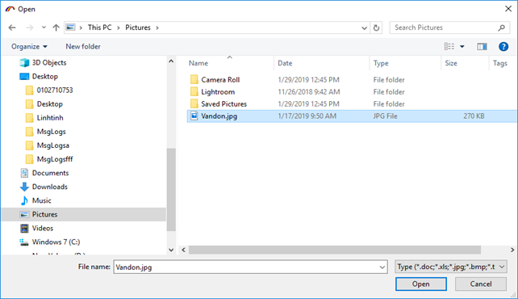
Sau khi nhập và ghi thông tin chứng từ, bạn tiến hành khai báo chứng từ bằng cách nhấn nút "Khai báo", nếu file đính kèm chưa được ký số trước đó phần mềm sẽ hiện cửa sổ thông báo để bạn tiến hành ký số như sau:
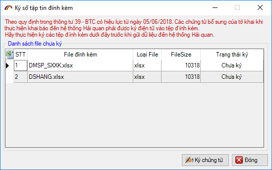
Nhấn "Ký chứng từ" và chọn chữ ký số từ danh sách (lưu ý chữ ký số phải được cắm vào máy tính):
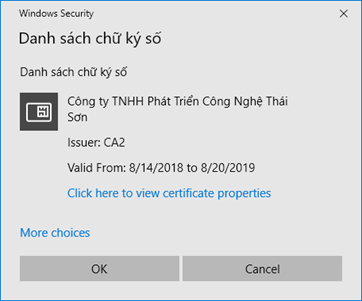
Nhập mã PIN cho thiết bị chữ ký số:
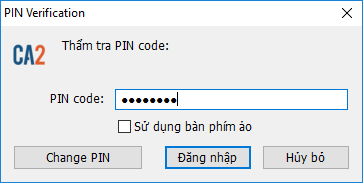
Sau khi ký số và gửi thành công lên cơ quan Hải quan bạn sẽ nhận được thông báo như sau:
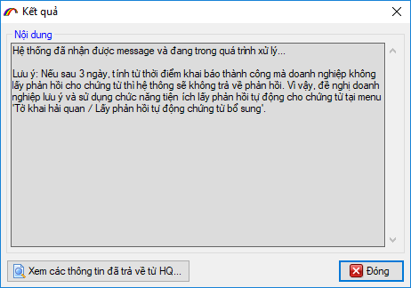
Sau đó nhấn nút "XNKB" để lấy thông tin phản hồi đến khi nhận được số tiếp nhận trả về từ cơ quan Hải quan.
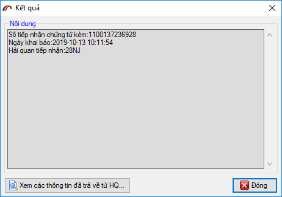
Lúc này bạn có thể yên tâm khai báo tiếp các bước còn lại như hướng dẫn phía dưới đây để hoàn tất thủ tục cho một tờ khai nhập khẩu.
Hoặc nếu có sai sót cần sửa lại bạn thực hiện Lấy thông tin tờ khai từ Hải quan IDB về để sửa.
Bản quyền © thuộc về Công ty TNHH Phát triển công nghệ Thái Sơn